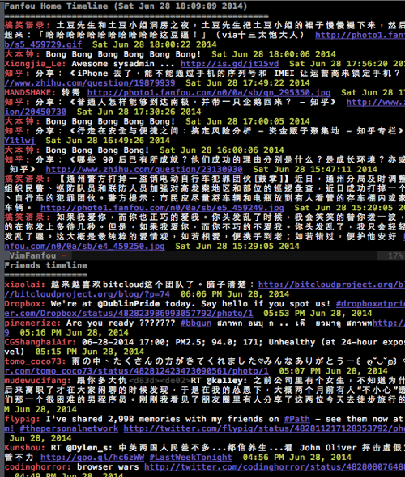

Vim-Fanfou
Vim-Fanfou = VIM + Fanfou. It allows you to post to status and view Fanfou timeline.
Just like Fanfou is a Twitter clone. Vim-Fanfou is a TwitVim clone.
Below are 2 Vim buffers. Vim-Fanfou is the top buffer. TwitVim is the bottom buffer.

About
Links
- Source code : https://github.com/xiongjia/vim-fanfou
- Releases : https://github.com/xiongjia/vim-fanfou/releases
- Vim Script : http://www.vim.org/scripts/script.php?script_id=4972
Contact
- My Fanfou account: Xiongjia_Le
- E-mail: lexiongjia@gmail.com
- Report issues: github issues
License
Vim-Fanfou is distributed under the same terms as VIM itself. See :help license.
Installation
Requirements:
Vim-Fanfou is based on Python 2.7(+) & VIM 7+. Please check your VIM before you install Vim-Fanfou.Steps to install:
Copy the "plugin" folder to your VIM "plugin" folder.
Usage
Setup & Login
- To enable HTTP Proxy: Add below line to your .vimrc.
let g:fanfou_http_proxy = "http://<proxy-host>:<proxy-port>" - To setup your Fanfou account: Run below command for save the Fanfou OAuth token.
:FanfouSetAccount- This command will open the Fanfou OAuth confirmation Web Page.
- After you get the PIN code, please enter it to VIM.
NOTE: In default, Vim-Fanfou saves your OAuth Token to "$HOME/.fanfou_auth_cache".
Commands
:FanfouSetAccount
To setup your Fanfou account. Please check "Setup & Login" section.:FanfouSwitchAccount
Login to another Fanfou account.:FanfouHomeTimeline
View your Fanfou home timeline.:FanfouMentions
View @ mention messages.:FanfouFavorites
View your Fanfou favorites.:FanfouRefresh
Update Fanfou Vim Buffer.:FanfouPostStatus
To post a new Status to your Fanfou.
Shortcut keys in the Fanfou VIM buffer
<Leader><Leader> :FanfouRefresh<cr><Leader>h :FanfouHomeTimeline<cr><Leader>m :FanfouMentions<cr><Leader>s :FanfouFavorites<cr><Leader>p :FanfouPostStatus<cr>
Changelogs
v0.2
- Fix HTML String convert issue
- Support Favorites&Mentions timeline
- Add more Shortcut keys
- Update Syntax for Vim Fanfou buffer
- Update README & Documentation; New Project Page: http://xiongjia.github.io/vim-fanfou/
- Add python unit tests
v0.1
- The first version